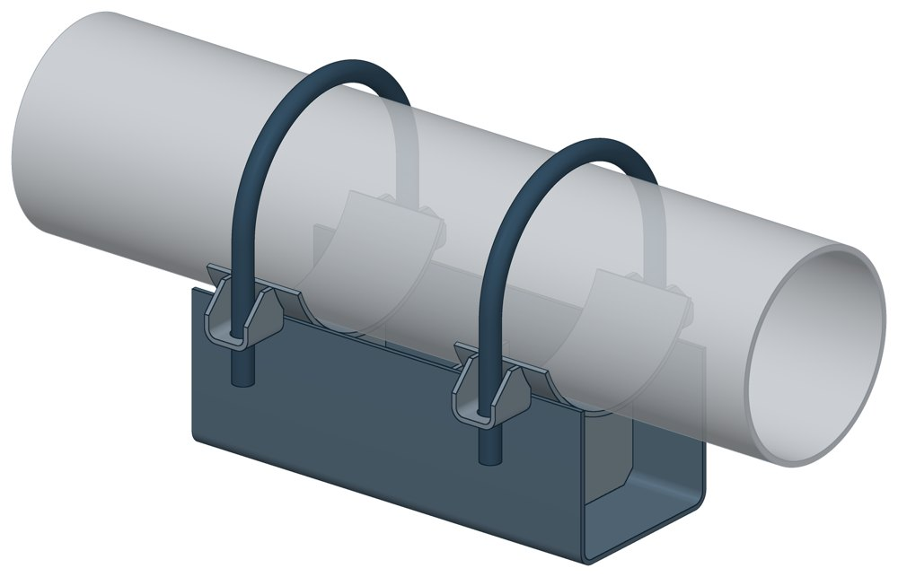
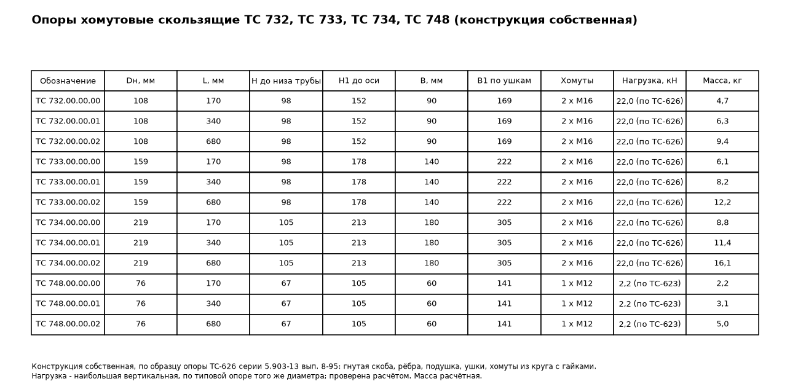

Опоры хомутовые скользящие ТС-733
Скользящая хомутовая опора для трубы Dн 159 мм: труба лежит на подушке корпуса и притянута двумя хомутами М16. Собственная конструкция ПРОМБУРГ: типового чертежа на это обозначение нет.

- Диаметр трубы Dн
- 159 мм
- Документ
- Собственная конструкция ПРОМБУРГ
- Исполнений
- 3
- Вертикальная нагрузка
- до 22 кН
- Масса
- 6,1–12,2 кг
- 3D-модели
- у всех исполнений
Применение и монтаж
Назначение: где применяется
Трубопроводы Dн 159 мм. Три длины корпуса: 170, 340 и 680 мм. Высота от основания до низа трубы — около 100 мм. Наибольшая вертикальная нагрузка 22 кН проверена расчётом на прочность.
Монтаж: как устанавливается
К трубе опора не приваривается: труба притянута хомутом с гайками к ушкам корпуса. Основание корпуса опирается на опорную конструкцию и скользит по ней.
Отличия от соседних типов
Типовая хомутовая опора по альбому серии — ТС-626 (Dн 108–1420). Допустима приварка к трубе — приварные ТС-623 и ТС-624.
Габаритная схема ТС-733

Таблица исполнений ТС-733
| Обозначение | Код ПРОМБУРГ | Dнмм | Вертикальная нагрузкакН | Высота h1мм | Длина Lмм | Массакг | 3D |
|---|---|---|---|---|---|---|---|
| ТС-733.00.00.00* | ПБ-733-0159-1 | 159 | 22 | 100 | 170 | 6,1 | 3D |
| ТС-733.00.00.01* | ПБ-733-0159-2 | 159 | 22 | 100 | 340 | 8,2 | 3D |
| ТС-733.00.00.02* | ПБ-733-0159-3 | 159 | 22 | 100 | 680 | 12,2 | 3D |
* Примечания к исполнениям:
- ТС-733.00.00.00, ТС-733.00.00.01, ТС-733.00.00.02 — Масса расчётная по модели собственной конструкции
Чтобы заказать, сообщите обозначение и код ПРОМБУРГ: +7 (499) 325-51-35, promburg@yandex.ru.
Нормативные документы
- Собственная конструкция ПРОМБУРГ — документ, по которому изготавливается изделие
Связанные позиции
- Соседний тип: ТС-734 — Опоры хомутовые скользящие
- Соседний тип: ТС-732 — Опоры скользящие хомутовые диэлектрические
Собрать узел с этим изделием
- Конструктор узла: собрать участок с компенсатором под свои данные труба, длина, среда, условия — состав узла и спецификация бесплатно
На трубу Dн 159 мм в каталоге
Позиции каталога с исполнениями на те же наружные диаметры трубы.
Детали трубопровода
- Заглушка стальная эллиптическая общих Dн: 1
- Отвод стальной крутоизогнутый 90°, 09Г2С общих Dн: 1
- Отвод стальной крутоизогнутый 90° общих Dн: 1
- Переход стальной концентрический общих Dн: 1
- Фланец стальной воротниковый общих Dн: 1
- Фланец стальной плоский приварной общих Dн: 1
Компенсаторы
- Компенсатор сильфонный 2ОПКР общих Dн: 1
- Компенсатор сильфонный 2ОПКР (ИЯНШ) 2ОПКРИ общих Dн: 1
- Компенсатор сильфонный 2СКУ.М 2СКУМ общих Dн: 1
- Компенсатор сильфонный 2СКУ.М (ИЯНШ) 2СКУМИ общих Dн: 1
- Компенсатор сильфонный 2СКУ.ППМ 2СКУППМ общих Dн: 1
- Компенсатор сильфонный 2СКУ.ППМ (ИЯНШ) 2СКУППМИ общих Dн: 1
- Компенсатор сильфонный 2СКУ.ППУ 2СКУППУ общих Dн: 1
- Компенсатор сильфонный 2СКУ.ППУ (ИЯНШ) 2СКУППУИ общих Dн: 1
- Компенсатор сильфонный 2СКУ.ППУ/ОЦ (ИЯНШ) 2СКУППУОЦИ общих Dн: 1
- Компенсатор сильфонный DEK общих Dн: 1
- Компенсатор сильфонный фланцевый KSOF общих Dн: 1
- Компенсатор сильфонный для систем отопления общих Dн: 1
- Компенсатор сильфонный для отопления с кожухом КОК общих Dн: 1
- Компенсатор сильфонный КС общих Dн: 1
И ещё 20 типов — в оглавлении каталога.
Другие опоры и подвески
- Опора неподвижная хомутовая ТС-659 общих Dн: 1
- Опора неподвижная двухупорная ТС-660 общих Dн: 1
- Опора неподвижная четырёхупорная ТС-661 общих Dн: 1
- Опора неподвижная щитовая ТС-666 общих Dн: 1
- Опора неподвижная хомутовая бескорпусная ТС-669 общих Dн: 1
- Опора неподвижная хомутовая с корпусом ТС-670 общих Dн: 1
- Опора скользящая приварная ТС-623 общих Dн: 1
- Опора скользящая хомутовая ТС-626 общих Dн: 1
- Опоры сварных отводов ТС-631 общих Dн: 1
- Опорные плиты диэлектрические ТС-632 общих Dн: 1
И ещё 64 типа — в оглавлении каталога.
Другие типы раздела
Хомутовые скользящие опоры (ТС-730…ТС-748, 313 ТС, СК)
- Опоры хомутовые подвижные 313 ТС
- Опоры хомутовые подвижные 313 ТС в футляре
- Хомутовые опоры СК 2109-92
- Хомутовые опоры СК 2410-94 в футлярах
- Опоры скользящие хомутовые диэлектрические ТС-732
- Опоры хомутовые скользящие ТС-734
- Опоры хомутовые ТС-748
Частые вопросы
Чем неподвижная опора отличается от подвижной?
Неподвижная закрепляет трубу в одной точке и принимает усилия от температурного расширения, давления и трения. Подвижная держит вес трубы и даёт ей перемещаться при нагреве. Неподвижные делят трассу на участки компенсации, подвижные стоят между ними. Место и тип каждой опоры задаёт проект.
Скользящая или катковая опора?
По СП 124.13330.2012 (п. 10.34) скользящие опоры применяют при всех способах прокладки и для всех диаметров труб. Катковые — для труб диаметром 200 мм и более при осевом перемещении, при прокладке в тоннелях, на кронштейнах, на отдельно стоящих опорах и эстакадах. Катковая опора снижает силу трения, которая передаётся на неподвижные опоры.
На каком расстоянии ставить опоры?
По СП 124.13330.2012 (п. 10.5) максимальные расстояния между подвижными опорами на прямых участках определяют расчётом на прочность и по допускаемому прогибу. Готового шага «по диаметру» норматив не даёт: пролёт задаёт проект.
По какому диаметру подбирать — Dн или Ду?
По наружному диаметру трубы Dн: именно он стоит в таблицах серии. Ду — условный проход, округлённая величина: Ду 100 соответствует Dн 108. В заявке указывайте Dн и толщину стенки трубы.
Из какой стали изготавливаются опоры?
По рабочим чертежам серии листовые детали — Ст3сп5 ГОСТ 14637-89, хомуты из круга — сталь 20 ГОСТ 1050-88. Для районов с низкой расчётной температурой воздуха применяется низколегированная сталь, в том числе 09Г2С; размеры опор при этом не меняются. В заявке укажите расчётную температуру наружного воздуха.
Что указать в заявке, чтобы получить цену без уточнений?
Обозначение с номером исполнения или код ПБ, количество, Dн и стенку трубы, расчётную температуру наружного воздуха, покрытие, город доставки и желаемый срок. Кнопка «В заявку» в таблице собирает спецификацию, которую можно выгрузить в Excel или отправить письмом.